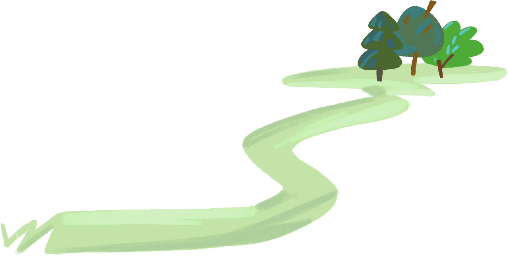

Trasee
pentru
mașină
Descoperă trei trasee ce te vor îndruma spre găsirea porților către istoria, cultura și religia acestui județ, în marea de natură și peisaje pitorești ce leagă întreaga zonă.
Nordul județului - primul traseu
Nordul județului - primul traseu
Primul traseu îți va aduce aminte de personalitățile care au adus onoare țării, te va îndemna spre spiritualitate și te va familiariza cu viața și cultura din perioada din care Vasluiul își are rădăcinile.

Mănăstirea Fâstăci
Prima locație din acest traseu o constituie Mănăstirea Fâstăci, o bijuterie arhitecturală și spirituală, construită în stil bizantin, cu o istorie care se crede că datează încă din secolul al XV-lea când a fost construită de un nobil ca recunoștință pentru un călugăr care i-a salvat viața. Este amplasată într-o zonă pitorească, în apropierea satului cu același nume, și se bucură de un peisaj natural deosebit, încărcat de păduri și câmpuri.
Muzeul Județean Ștefan cel Mare
Muzeul Județean cuprinde șapte secții din cinci domenii, respectiv istorie, arheologie, etnografie, cultură și artă. Tot în acest muzeu poate fi observată o dioramă a bătăliei de la Vaslui, care s-a distins de alte bătălii dintre creștini și turci prin amploarea forțelor desfășurate, prin armamentul folosit, prin tacticile de luptă aplicate și, mai ales, prin ingeniozitatea armatei voievodului Ștefan cel Mare, domnitorul Țării Moldovei, de a învinge o oaste de aproximativ două ori mai mare decât a sa.
Vei continua traseul cu alte două obiective cu însemnătate istorică, iar pentru a ajunge la ele este nevoie să mergi pe drumul DN24 Vaslui - Iași, până în comuna Solesti, unde vei putea vizita:
Casa și mormântul Elenei Cuza
Următoarele locații se află una lângă alta, în satul Solesti și este vorba de Casa Elena Cuza sau Conacul Rosetti-Solescu, care datează încă din secolul al XIX-lea și reprezintă locul în care a copilărit viitoarea Prima Doamnă a României, și mormântul acesteia, dorința ei fiind aceea de a se odihni în curtea bisericii de lângă casă în care a crescut.
Muzeul etnografic Satu Nou
La doar 5 minute de obiectivele anterioare, se află al doilea muzeu din traseu, mai exact Muzeul etnografic Satu Nou care are ca rol conservarea pieselor vestimentare specifice satului românesc, documentelor vieții spirituale din trecut, unei serii de piese din folclorul muzical sau unor unelte de care persoanele se foloseau pentru a-și duce traiul în mediul rural, pentru cunoașterea culturii populare din județul Vaslui. Pentru a putea vizita acest obiectiv este nevoie să faci o programare prin intermediul consiliului local, la numărul: 0784256866.
Continuând pe drumul DN24 Vaslui - Iași, după aproximativ 15 minute, se poate observa, pe partea stângă a șoselei, o poartă arcuită din piatră ce indică intrarea către:
Movila lui Burcel și Mănăstirea Sfinții Împărați Constantin și Elena
Povestea spune că
în 1498, voievodul Ștefan cel Mare trecea prin
zona sudică a Podișului Moldovei, într-o zi de
duminică, și nu mică i-a fost mirarea când a
văzut un țăran fără o mână, arând pământul.
Întrebat de ce ară pământul duminica, țăranul pe
nume Burcel i-a răspuns că este foarte sărac și
că nu are cu ce să-și întrețină familia.
Întrebat de ce nu are o mână, răzeșul a răspuns
că a pierdut-o în bătălia de la Vaslui. Măritul
voievod, impresionat, i-a dăruit țăranului șase
pungi cu galbeni și un act prin care acel loc să
fie pentru totdeauna proprietatea familiei
Burcel.
Astăzi, pe pământul legendarei Movile ale lui
Burcel, stau așezate atât o frumoasă biserică ce stă
sub numele de
Sfinții Împărați Constantin și Elena, cât și sculpturile vestite,
un monument falnic alcătuit din trei
cruci
care se spune că are diferite însemnătăți, Sfânta
Treime, cele trei provincii românești sau cei trei
mari sfinți ai Ortodoxiei,
un monument care arată Harta României
Mari, iar una altul fiind
Femeia din bronz care este simbolul Daciei
Traiane.
Pentru a încheia traseul, va fi necesar să te aventurezi pe un drum neasfaltat, printre satele județului, compus din DJ426 și DJ427, în jurul căruia peisajele naturale nu își vor face lipsa prezenta.
Casa Memorială Emil Racoviță
După un drum prin câteva dintre satele județului Vaslui, încheiem traseul în comuna Dănești, unde vei găsi casa în care cunoscutul om de știință Emil Racoviță s-a născut și a trăit. Aceasta a fost transformată în muzeu memorial unde sunt prezente, la expoziție, obiecte legate de copilăria savantului, fotocopii, facsimile și colecții memoriale privind viața și activitatea academicianului.
Sud-Vestul judetului - al doilea traseu
Sud-Vestul judetului - al doilea traseu
Al doilea traseu te poartă prin sud-vestul județului, având ca punct de plecare orașul Vaslui și traversând limita de vest a județului, până în orașul Bârlad.
Manastirea Floresti
Mănăstirea Florești este cunoscută pentru arhitectura ei impresionantă, în stil neogotic, care o face specială printre mănăstirile ortodoxe. Se spune că este unul dintre lăcașurile cele mai vechi din județul Vaslui, fiind restaurată pentru a-i păstra frumusețea în ciuda trecerii timpului. Lângă satul ce poartă numele mănăstirii se află și Lacul Gădeasa, un loc perfect pentru a vă reconecta cu natura, fiind situat într-un cadru pitoresc.
Mănăstirea Nașterea Sfântului Ioan Botezătorul Ivănești
Mănăstirea a fost înființată în anul 2000, la cererea credincioșilor din comuna Ivanesti, și este o construcție din lemn, pe temelie de piatră, în formă de cruce. Deoarece hramul mănăstirii este „Nașterea Sf. Ioan Botezătorul”, pe bolta pronaosului este pictat Sf. Ioan Botezătorul și mai multe scene din viața acestui sfânt. În curtea mănăstirii se poate observa bustul domnitorului Ștefan cel Mare, așezat la jumătatea distanței dintre biserică și altarul de vară.
În ciuda faptului că drumul de la Biserica Nașterea Sfântului Ioan Botezătorul și până la următorul obiectiv este mai amplu, acesta traversează, rând pe rând, sate care păstrează în viață obiceiurile și tradițiile regiunii.
Centrul Mihai Eminescu - Casa Rosie
Centrul Mihai Eminescu din Bârlad este un concept unic la nivel naţional ca patriomoniu şi prezentare. Este locul unde se găseşte capodopera eminesciană si care are o colectie care constă în peste 5.800 de volume din care 2.100 sunt cu şi despre Mihai Eminescu . Lada în care poetul ţinea manuscrisele, numeroase discuri, casete audio şi CD-uri cu romanţe pe versurile lui Mihai Eminescu sau lucrări de artă realizate pentru a ilustra cât mai bine creația eminesciană, pot fi admirate în cadrul unei vizite.
Parăsind Municipiul Bârlad și îndreptându-te înapoi spre Vaslui, în locul în care se încheie acest traseu, vei trece câteva monumente istorice ce nu pot fi ratate.
Podul Doamnei
Podul de la Chițcani a fost ridicat în anul 1841 de către Mihail Sturza cu scopul de a dezvolta rețeaua de drumuri ce legau capitala Moldovei, Iași, cu principalele centre comerciale. Podul Doamnei își trage numele de la o veche stație de poștă de pe „Drumul Olăcului”, din secolele XVII-XVIII, și se află pe DN24 la aproximativ 70 de metri de șosea.
Manastirea Moreni si Schitul Ticlauani
Impunătoarea Mănăstirea Moreni , situată la poalele dealului Țiclău, la 27 de km sud de municipiul Vaslui , ce este astăzi casa a 26 de maici și surori, își are rădăcinile încă din anii 1540-1546 , când Lupan Buznea ridică o simplă biserică de lemn pe același pământ. Lăcașul de cult obține numele de Mănăstirea Moreni mult mai târziu, în anul 1853 , când o altă biserică, tot din lemn, preia locul celei anterioare. Schitul Ticlăuani , ce aparține de Mănăstirea Moreni, se află într-o zonă de un pitoresc aparte, cu o priveliște superbă asupra întregii zone.
Statuia ecvestră a lui Ștefan cel Mare de la Podul Înalt
Este un monument de bronz, sculptat de Mircea Ștefănescu și finalizat în anul 1975, în onoarea Bătăliei de la Podul Înalt, în care domnitorul Ștefan cel Mare a învins oastea otomană.
Județul Vaslui - al treilea traseu
Județul Vaslui - al treilea traseu
Ultimul traseu, care trece prin cele trei orașe principale ale județului, Vaslui, Bârlad și Huși, leagă obiectivele reprezentative ale fiecăruia. Traseul începe din Municipiul Vaslui, deși poate fi început din oricare din cele trei orașe, fiind gândit sub forma unui circuit închis.
Ansamblul Curților Domnești
Este un sit istoric ce cuprinde atât o reconstituire arhitecturală a fostei Curți Domnești, ce a fost construită în perioada 1435-1436, cât și Biserica Tăierea Capului Sfântului Ioan Botezătorul, ctitorită de însuși Ștefan cel Mare în anul 1490. Este simbolul turistic al municipiului Vaslui, fiind vizitat zilnic de zeci de persoane. Mai mult, întreaga zonă reprezintă un spațiu propice relaxării în armonia naturii, istoriei și a spiritualității.
Mai apoi, te vei îndrepta spre Bârlad, pe strada DN24, drum de-a lungul căruia vei putea observa, pe partea din stânga, atât Statuia ecvestră a lui Ștefan cel Mare de la Podul Înalt, cât și un drum, care te va ghida către Podul Doamnei.
Grădina Zoologică
Deși la început era formată dintr-un singur urs închis într-o cușcă, Grădina Zoologică Bârlad , înființată în anul 1959, deține acum peste 540 de exemplare din 65 de specii , fiind cea mai mare grădină de acest tip din Moldova.
Tot în Bârlad poți observa și monumentul ridicat în memoria pictorului bârlădean Nicolae Tonitza, loc în care, în trecut, era așezată casa în care s-a născut și a copilărit.
Muzeul Vasile Pârvân
Muzeul "Vasile Pârvan" din Bârlad este un muzeu de istorie și artă, fondat în anul 1947 și este denumit în onoarea arheologului român Vasile Pârvan, care s-a născut în Bârlad. Muzeul găzduiește colecții variate care prezintă istoria și cultura orașului și a regiunii înconjurătoare. În cadrul lui puteți vizita 6 secțiunidiferite: arheologie, artă, istorie, astronomie, Bârladul cultural și științe ale naturii. Printre exponatele sale se numără obiecte arheologice, documente istorice, artefacte etnografice, tablouri și sculpturi. Secțiunea de astrologie cuprinde un observator și singurul planetariu digital din județul Vaslui, care este și printre puținele planetații digitale din țară. Aceste două atracții pot fi vizitate în cadrul Pavilionului Expozițional Marcel Guguianu, împreună cu o serie de lucrări ale artistului bârlădean.
După ce părăsești Bârladul, pe strada DN24A, îndreptându-te spre estul județului, vei face o oprire la Mănăstirea Bujoreni la care ajungi virând la stânga după satul Popeni. În drum spre mănăstire se află un stejar multisecular ce merită văzut.
Mănastirea Bujoreni
Mănăstirea Bujoreni , numită și Schitul Măgarului, datorită legendei care spune că un cioban și-a găsit măgarul în genunchi în fața unui stejar ce adăpostea în scorbura lui o icoană a Maicii Domnului, ca mai apoi să ridice un schit pe acel loc, iar trupul stejarului ajungând sfântă masă, este mai frumoasă ca niciodată și deschisă tuturor creștinilor.
Monumentul istoric al Bătăliei de la Țiganca
Monumentul ridicat în memoria uneia dintre cele mai sângeroase bătălii purtate de români pentru reîntregirea țării, cunoscută și sub numele de bătălia de la Țiganca , unde 10.000 de soldați români au murit sau au fost dați dispăruți, poate fi observat în cadrul primului parc istoric din județul Vaslui, aflat în comuna Fălciu.
Crama Averești
Ajuns în Huși, orașul dintre vii, te așteaptă vestitul Centru Viticol Averești . Aici, vița de vie a fost cultivată de mii de ani, meseria fiind transmisă din tată în fiu, iar în fiecare an, în cel mai răcoros loc al pivniței, este îngropată o sticlă din primul vin obținut, drept ofrandă plantățiilor și celor care au muncit pe acele tărâmuri. Cu siguranță, Domeniile Averești merită vizitate și, de ce nu, părăsite în urma achiziționării unei sticle de vin aleasă după bunul plac din multitudinea de tipuri puse la dispoziție.